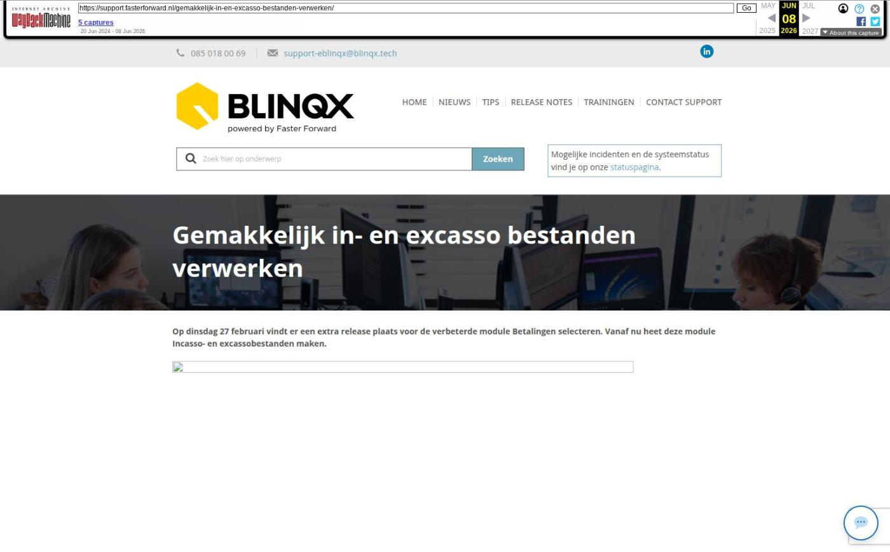

Gemakkelijk in- en excasso bestanden verwerken

Tekstinhoud
Op dinsdag 27 februari vindt er een extra release plaats voor de verbeterde module Betalingen selecteren. Vanaf nu heet deze module Incasso- en excassobestanden maken.
Nieuw jasje
Tussenrekening instellen
Batch goedkeuren
Incassobatch RC deelnemer
Nieuw jasje
De module heeft een nieuw jasje gekregen. Ook hebben de tabbladen een andere naam gekregen. Op deze manier is het duidelijker wat je gaat doen.
Tussenrekening instellen
Vanaf nu verlopen de betalingen ook niet meer via de grootboekrekeningen 'Betalingen onderweg' en 'Incasso's onderweg'. Je hoeft deze dan niet meer per klant/relatie aan te vinken. De betalingen en incasso's verlopen nu via een tussenrekening. Per subadministratie (debiteuren, crediteuren, RC deelnemers en RC maatschappijen) moet er een eigen tussenrekening ingesteld worden.
Op dinsdag 27-02-2023 maken wij deze tussenrekeningen voor jou aan en stellen wij deze tussenrekeningen voor jou in. Mocht je hierin iets willen wijzigen of er meer over willen weten dan kan je er hier meer over lezen.
De openstaande posten die geselecteerd zijn in de module 'Incasso- en excassobestanden maken' worden afgeboekt op deze tussenrekening. Dit gebeurt wanneer de geselecteerde posten worden opgeslagen en goedgekeurd als batch. Het totaal van de gehele batch wordt als één post op de tussenrekening geboekt in plaats van voorheen allemaal individuele posten. Wanneer je bijvoorbeeld een debiteurenincasso op je bankafschrift gaat verwerken, kan je gemakkelijk met F6 zowel alle openstaande posten van de grootboekrekening debiteuren mét daarbij alle openstaande batches van de gekoppelde tussenrekening ophalen. Het verwerken van een openstaande batch op deze manier zal resulteren in één post in plaats van allemaal individuele posten.
Batch goedkeuren
Voor debiteuren en crediteuren is het vanaf nu ook mogelijk om in te stellen of de batch direct automatisch goedgekeurd moet worden of dat hier handmatig goedkeuring voor gegeven moet worden. Bij het handmatig goedkeuren heb je nog de keuze of de batch altijd handmatig goedgekeurd moet worden of boven een bepaald bedrag. Dit kan je instellen via Financieel – Administraties onderhoud – tabblad Algemeen.
De batch van de RC deelnemers en RC maatschappijen wordt altijd automatisch goedgekeurd. Hier is geen aparte instelling voor.
Incassobatch RC deelnemer
Ook kan er nu, via de module Incasso- en excassobestanden maken, voor RC deelnemers een incassobatch gemaakt worden. Om te kunnen incasseren bij een deelnemer moet er een IBAN en mandaat ingesteld staan. Dit kan je instellen in Beheer – Organisatie & Personen – betreffende deelnemer – tabblad Financieel. Als het IBAN of mandaat niet correct staat ingesteld, is het niet mogelijk om een incassobatch aan te maken. In de module Incasso- en excassobestanden verschijnt er dan een foutmelding.
Geplaatst op 23 februari 2024 (Laatste update: 26 februari 2024)
Laatste 5 releasenotes
Voorbereidingen op HDN 26 en verbeteringen PortefeuilleSignalen »
Nog meer data en documenten vergelijken »
Gemakkelijk data en documenten vergelijken »
Verbeteringen boekhouding en facturatie »
Verbeteringen gespreksopname en onder de motorkap »